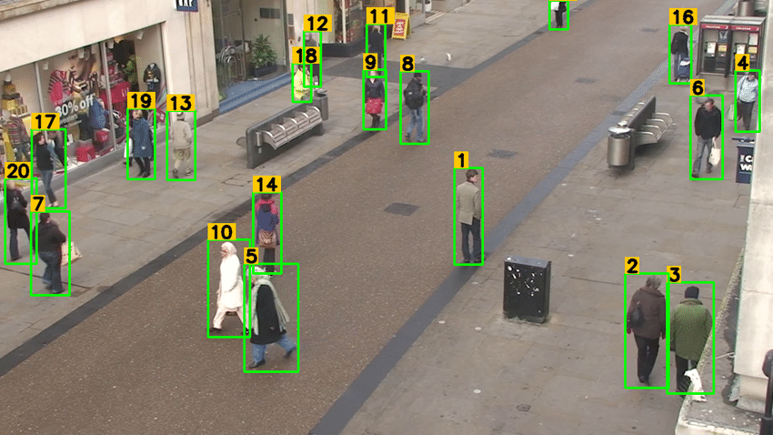
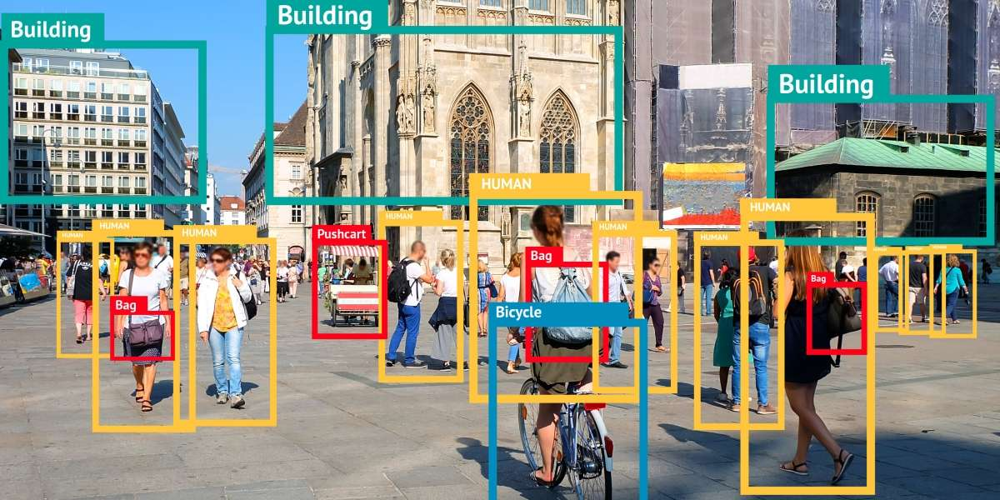
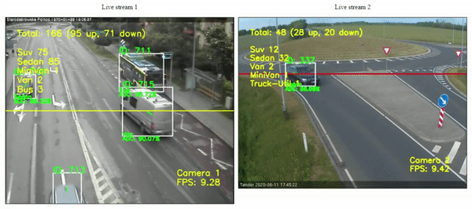
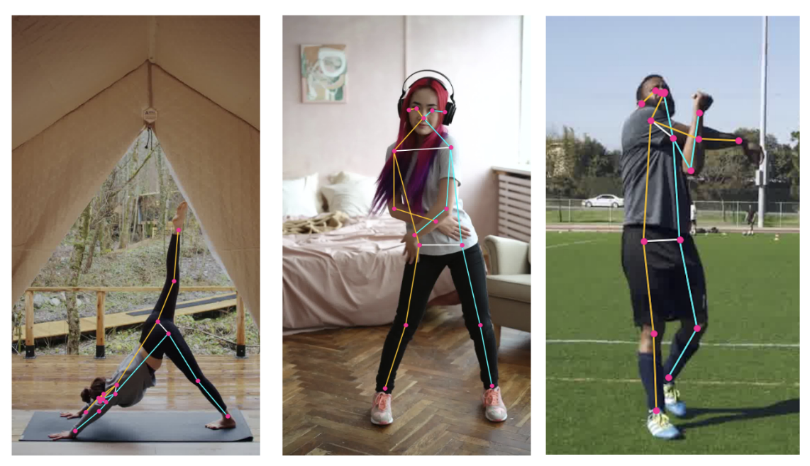
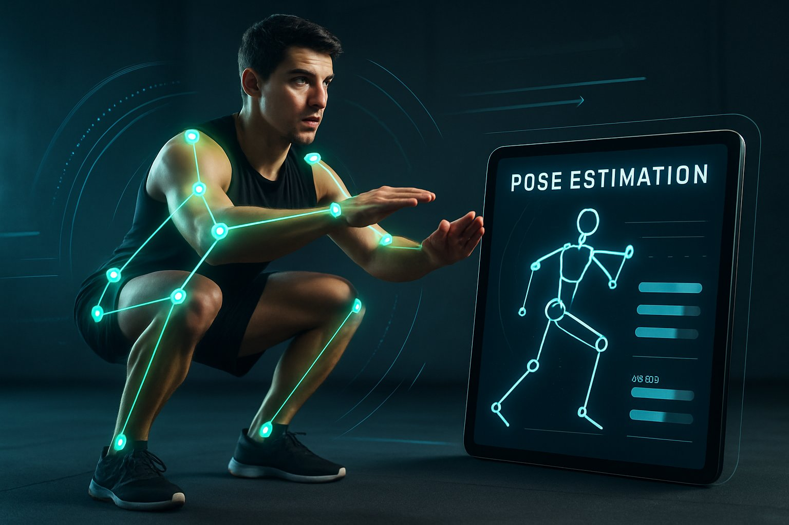
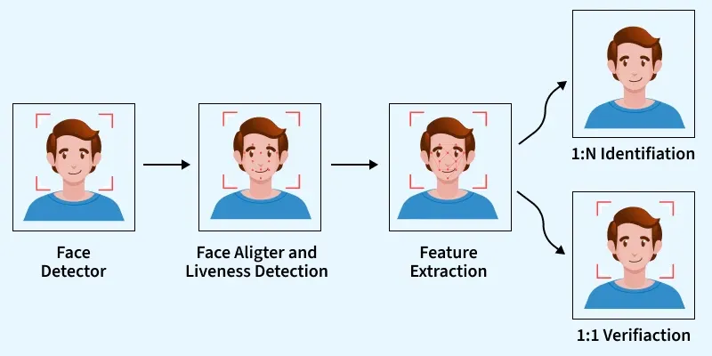
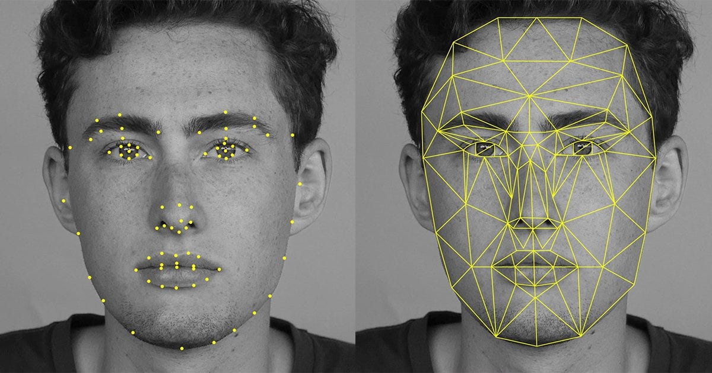
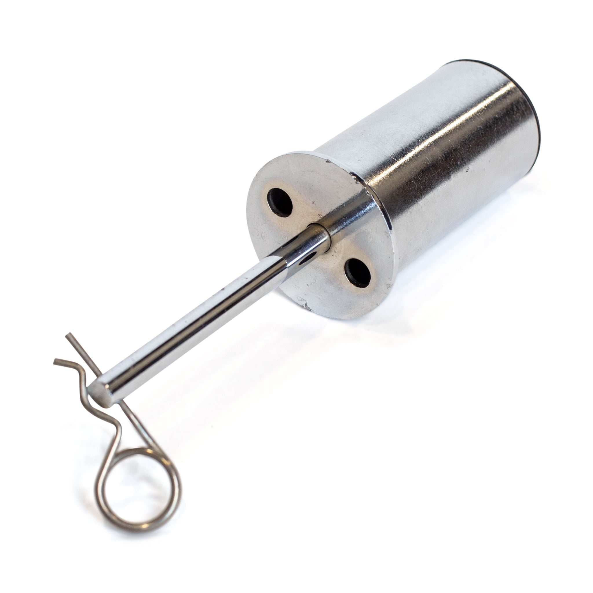

The XL FitnessAI Overseer
Every idea explored. Every concept explained simply with real examples. Every technical decision justified. This is the complete guide to how we build an AI that watches the gym floor and knows exactly what every member is doing — without them lifting a finger.
What Are We Building?
Imagine a person standing in the gym, watching every machine, knowing every member by face, counting every rep, reading every weight — all at once, all the time, never getting tired, never missing anything. That's the AI Overseer.
The goal is simple to say but hard to build: zero friction data capture. A member walks in, sits at a machine, and trains. The AI does everything else. It knows who they are. It knows what machine they're at. It reads the weight. It counts the reps. It scores the form. It logs everything to a database. The member never touches a tablet.
This isn't science fiction — it's a combination of four proven AI technologies (YOLO, DeepSORT, MoveNet, InsightFace) that already exist and work in production systems around the world. We're combining them in a way that's never been done in a gym context.
The system should feel like magic to the member. They just train. Behind the scenes, three cameras and four AI models are working in parallel to capture a complete, verified record of their session — better data than any personal trainer could manually collect.

The Problem We're Solving
Before we explain any technology, we need to understand the problem deeply. Because if you don't understand the problem, the solution looks like overkill.
Most gyms have a data problem. Members self-report their workouts, and the data is unreliable — people round up, forget, or simply don't log at all. Studies show ~40% of manually logged gym data contains errors. You cannot build a coaching product, a leaderboard, or a personalisation engine on unreliable data.
How the System Works
The system has five layers. Each layer answers one question. Together they answer the only question that matters: "Who is at this machine, what are they lifting, and how many reps have they done?"
Each stage has a specific job. Together they take a raw camera frame and turn it into a verified workout record in under 50 milliseconds — faster than a single video frame.
| Camera | Position | Job | Why This Position? |
|---|---|---|---|
| Camera 1 | Overhead fisheye, ceiling | Person detection + tracking + zone matching | Overhead angle sees all machines simultaneously. One camera covers 4–6 machines. |
| Camera 2 | Side angle, column/wall | Pose estimation + rep counting | Side angle shows the full range of motion — the elbow bend, the extension. You can't count reps from above. |
| Camera 3 | Facing weight stack | Weight detection | Direct view of the weight plates and selector pin. No ambiguity about which weight is selected. |
What is a Bounding Box?
Before the AI can do anything — count reps, identify faces, read weights — it first needs to know where people are in the camera image. A bounding box is the answer to that question.
A bounding box is just a rectangle drawn around a person. That's it. It's defined by four numbers: the x position (left edge), y position (top edge), width, and height — all measured in pixels from the top-left corner of the image.
Look at the image on the right. Every person has a green rectangle around them and a yellow number. That green rectangle is the bounding box. That yellow number is the tracking ID. This is exactly what our system produces — 30 times per second, for every person on the gym floor.
Every other AI layer depends on bounding boxes. Face ID crops the face from the bounding box. Pose estimation runs inside the bounding box. Zone matching uses the bounding box centre point. Get detection right and everything else follows.
A Bounding Box is Just 4 Numbers
# This is everything YOLO outputs for one detected person { "bbox": [ 340, # x — pixels from left edge 210, # y — pixels from top edge 80, # width — how wide in pixels 140 # height — how tall in pixels ], "confidence": 0.94, # 94% sure this is a person "class": "person" }

How It Looks in the Real World


| Method | Time Per Frame | Info Quality | Our Choice? |
|---|---|---|---|
| Bounding Box (YOLO) | ~15ms | Good — rectangle around person | ✓ Yes |
| Pixel Segmentation | ~150ms+ | Perfect — exact outline | ✗ Too slow |
| Simple Motion Detection | ~2ms | Poor — just "something moved" | ✗ Not enough info |
YOLO — You Only Look Once
YOLO is the AI model that scans the camera image and finds every person in it. It does this in about 15 milliseconds — fast enough to run 30 times per second on every camera.
The name "You Only Look Once" refers to how it works. Older detection systems would scan the image multiple times, looking at different regions. YOLO looks at the entire image once, in a single pass through the neural network, and outputs all detections simultaneously. This is why it's so fast.
YOLO divides the image into a grid. For each grid cell, it predicts: "Is there a person here? If so, where exactly, and how confident am I?" The predictions from all grid cells are combined and filtered to produce the final list of bounding boxes.
We use YOLOv8 — the current best version. It's pre-trained on millions of images and already knows what a person looks like from any angle, including overhead — which is exactly what our ceiling cameras need.
What the Code Looks Like
from ultralytics import YOLO import cv2 # Load the pre-trained model — one line model = YOLO('yolov8n.pt') # 'n' = nano, fastest # Open the camera stream cap = cv2.VideoCapture('rtsp://192.168.1.100/stream1') while True: ret, frame = cap.read() # Run detection — this is the magic line results = model.predict(frame, classes=[0]) # class 0 = person # Each result has bounding boxes + confidence for box in results[0].boxes: x, y, w, h = box.xywh[0] # position conf = box.conf[0] # confidence 0.0–1.0 print(f"Person at ({x:.0f},{y:.0f}), conf={conf:.2f}")
YOLOv8 Nano runs at 30fps on a Mac Mini M4 Pro without a GPU. It's pre-trained on COCO dataset (80 classes including "person"). It handles overhead angles well. It's free and open source. And it's the industry standard — used by Tesla, Amazon, and thousands of production systems.
| YOLO Version | Speed (Mac Mini M4) | Accuracy (mAP) | Our Use |
|---|---|---|---|
| YOLOv8 Nano | 30fps+ | 37.3 | ✓ Phase 1 — fast enough, free |
| YOLOv8 Small | 25fps | 44.9 | Phase 2 option — more accurate |
| YOLOv8 Medium | 15fps | 50.2 | Phase 3 with GPU |
| YOLOv10 / RT-DETR | Varies | 54+ | Phase 4 — best accuracy |
What is a Confidence Score?
Every time YOLO detects something, it doesn't just say "there's a person." It says "I'm 94% sure there's a person here." That percentage is the confidence score — and it drives every decision the system makes.
The confidence score is a number between 0 and 1 (0% to 100%). It represents how certain the neural network is about its detection. A score of 0.94 means "94% sure this is a person." A score of 0.31 means "31% sure — probably not worth acting on."
We set a confidence threshold — a minimum score below which we ignore detections. This filters out false positives (shadows, equipment, reflections) without missing real people.
# Only process detections above our threshold CONFIDENCE_THRESHOLD = 0.60 # 60% minimum for box in results[0].boxes: conf = float(box.conf[0]) if conf < CONFIDENCE_THRESHOLD: continue # ignore low-confidence detections # This detection is reliable — process it process_detection(box, conf)
| Score | Meaning | System Action |
|---|---|---|
| ≥ 0.90 | Very high confidence | Auto-process, no verification needed |
| 0.70–0.89 | High confidence | Process normally |
| 0.50–0.69 | Medium confidence | Process but flag for review |
| 0.30–0.49 | Low confidence | Ignore — likely false positive |
| < 0.30 | Very low | Definitely ignore |
We start at 0.60 (60%) in Phase 1. As we collect more data and retrain on gym-specific footage, we can lower this to 0.45 without increasing false positives — because the model gets better at knowing what a person looks like in our specific gym.
The Tracking Problem
YOLO detects people in a single frame. But video is a sequence of frames. Without tracking, YOLO has no memory — it sees completely fresh images every frame. This creates a serious problem.
Imagine YOLO detects 5 people in Frame 1. It labels them Person 1, 2, 3, 4, 5. Now in Frame 2, one person moves slightly. YOLO detects them again — but now it might call them Person 7, because it has no memory of Frame 1. The IDs jump randomly every frame.
This is catastrophic for our system. If Person #3 is Matt McArdle doing lat pulldowns, and his ID changes to Person #11 in the next frame, we've lost track of him. We can't count his reps. We can't log his session. The whole system breaks.
Tracking solves this. A tracking algorithm watches YOLO's detections across frames and says: "Person #3 in Frame 1 is the same person as Person #3 in Frame 2, even though they moved." It maintains stable, persistent IDs across the entire session.
Without stable IDs, you cannot count reps (you need to track the same person across 30+ frames per rep), you cannot associate a face with a machine position, and you cannot log a session. Tracking is not optional — it's foundational.

How DeepSORT Keeps Track
DeepSORT is the algorithm that solves the tracking problem. It maintains stable, persistent IDs for every person across every frame. It does this using three simultaneous strategies.

The 3 Components
A Kalman Filter is a mathematical prediction algorithm. Given a person's current position and velocity, it predicts where they'll be in the next frame. This prediction is used to pre-match new detections before even looking at appearance.
A small neural network extracts a 128-number "fingerprint" from each detected person's appearance. If the fingerprint from Frame 2 is similar to Frame 1, they're the same person. This handles cases where the Kalman prediction is wrong (e.g., someone changed direction suddenly).
When there are 5 people in Frame 1 and 5 detections in Frame 2, the Hungarian Algorithm finds the optimal assignment — which detection in Frame 2 corresponds to which tracked person from Frame 1. It minimises the total "cost" (distance + appearance difference) across all assignments simultaneously.
What the Code Looks Like
from deep_sort_realtime.deepsort_tracker import DeepSort # Initialise tracker — one line tracker = DeepSort(max_age=30) # keep track for 30 frames after disappearing while True: ret, frame = cap.read() yolo_results = model.predict(frame, classes=[0]) # Convert YOLO detections to DeepSORT format detections = [] for box in yolo_results[0].boxes: x1, y1, x2, y2 = box.xyxy[0] conf = float(box.conf[0]) detections.append(([x1, y1, x2-x1, y2-y1], conf, 'person')) # Update tracker — returns stable tracked objects tracks = tracker.update_tracks(detections, frame=frame) for track in tracks: if not track.is_confirmed(): continue track_id = track.track_id # THIS IS STABLE — same person = same ID every frame ltrb = track.to_ltrb() # bounding box: left, top, right, bottom print(f"Person #{track_id} at {ltrb}")
With DeepSORT active, Person #3 stays Person #3 for their entire gym session — even if they leave the frame for a moment (e.g., to get water) and come back. The system re-identifies them and restores their ID. This is the foundation that makes rep counting and session logging possible.
Which Machine Is Person #7 At?
We know there's a person in the frame. We know their stable ID is #7. Now we need to know which machine they're at. Zone matching is the bridge between person tracking and machine assignment.
Every machine has a zone — a polygon drawn in camera pixel coordinates. These are rectangles (or irregular shapes) that define the area of the camera image where someone sitting at that machine would appear. If Person #7's bounding box centre point is inside Machine 3's zone polygon, they are assigned to Machine 3.
This is a one-time setup task. A developer looks at the camera feed, draws polygons around each machine's area, and saves the coordinates to a config file. It takes about 30 minutes per camera. After that, the system runs automatically forever.
// Zone polygons for Camera 1 (overhead) // Coordinates are in pixels from top-left of camera image const MACHINE_ZONES = { 'lat-pulldown-1': { zone: [120, 80, 240, 80, 240, 200, 120, 200], camera: 'cam-1', side_camera: 'cam-2a', weight_camera: 'cam-3a' }, 'chest-press-1': { zone: [260, 80, 380, 80, 380, 200, 260, 200], camera: 'cam-1', side_camera: 'cam-2b', weight_camera: 'cam-3b' } }; // Check which machine a person is at function getMachineForPerson(cx, cy) { for (const [machineId, config] of Object.entries(MACHINE_ZONES)) { if (pointInPolygon(cx, cy, config.zone)) { return machineId; // found it! } } return null; // person is between machines / walking }
Zone configuration is done once when a new camera is installed. It takes ~30 minutes. After that, the system assigns people to machines automatically forever. When machines are moved or new ones added, the config file is updated — no retraining required.
Why Do We Need Pose Estimation?
We know who is at the machine. We know which machine. But to count reps, we need to know what their body is doing. A bounding box just tells us where a person is — pose estimation tells us how they're moving.
A bounding box is a rectangle. It tells you a person exists at a location. It tells you nothing about whether their arms are extended or contracted, whether they're at the top or bottom of a rep, or whether their form is correct.
Pose estimation detects the positions of specific body joints — elbows, wrists, shoulders, hips, knees. By tracking how these joints move over time, we can determine:
- Whether a rep has started
- Whether a rep has been completed (full range of motion)
- Whether the form is correct (joint angles within acceptable range)
- Rest periods (no significant joint movement)
- Which exercise is being performed
A rep is defined by a joint angle going from one extreme to another. For a lat pulldown: elbow angle goes from ~160° (arms extended) to ~70° (arms pulled down). When this transition happens and reverses, that's one rep. Pose estimation gives us the joint angles. The LSTM neural network (Section 12) counts the reps.

| Model | Keypoints | Speed | Our Use |
|---|---|---|---|
| MoveNet Lightning | 17 | 30fps+ on CPU | ✓ Phase 1 — fast, free, accurate enough |
| MoveNet Thunder | 17 | 15fps on CPU | Phase 2 option — more accurate |
| MediaPipe BlazePose | 33 | 20fps on CPU | Alternative — more joints, slower |
| OpenPose | 25 | 5fps on CPU | ✗ Too slow for real-time |
MoveNet — The 17 Joints
MoveNet is the pose estimation model we use. It detects 17 specific body joints (called keypoints) on every person in the frame. Each keypoint has an x position, y position, and confidence score.
MoveNet was developed by Google and is specifically optimised for speed. The "Lightning" version runs at 30+ frames per second on a standard CPU — no GPU required. This is critical because we need to run it on every camera simultaneously on a Mac Mini.
Each of the 17 keypoints corresponds to a specific body landmark. By calculating the angles between connected keypoints (e.g., the angle at the elbow = the angle between shoulder→elbow→wrist), we can precisely measure joint angles throughout a movement.
import tensorflow as tf import numpy as np # Load MoveNet Lightning module = hub.load('https://tfhub.dev/google/movenet/singlepose/lightning/4') movenet = module.signatures['serving_default'] def get_keypoints(person_crop): # Resize to 192x192 (MoveNet input size) img = tf.image.resize_with_pad(person_crop, 192, 192) img = tf.cast(img, dtype=tf.int32) # Run inference outputs = movenet(tf.expand_dims(img, axis=0)) keypoints = outputs['output_0'].numpy()[0][0] # shape: (17, 3) # Each row: [y, x, confidence] # Row 0 = nose, Row 5 = left shoulder, Row 7 = left elbow... return keypoints def get_elbow_angle(kps): # Keypoint indices: 5=L.shoulder, 7=L.elbow, 9=L.wrist shoulder = kps[5][:2] # [y, x] elbow = kps[7][:2] wrist = kps[9][:2] # Calculate angle using dot product v1 = shoulder - elbow v2 = wrist - elbow cos_angle = np.dot(v1, v2) / (np.linalg.norm(v1) * np.linalg.norm(v2)) angle = np.degrees(np.arccos(np.clip(cos_angle, -1, 1))) return angle # degrees: ~160 = extended, ~70 = contracted


How the AI Counts Reps
MoveNet gives us joint positions every frame. But a single frame doesn't tell you if a rep is happening — you need to watch a sequence of frames over time. This is where the LSTM neural network comes in.
LSTM stands for Long Short-Term Memory. It's a type of neural network specifically designed to understand sequences — things that happen over time. It's the same technology used in speech recognition and language translation.
For rep counting, we feed the LSTM a sequence of 30 frames (about 1 second of video) worth of joint angle data. The LSTM looks at how the angles change over those 30 frames and classifies what's happening:
| LSTM Output | Meaning |
|---|---|
good_rep | Full range of motion completed — count it |
partial_rep | Movement started but didn't complete — don't count |
rest | Person is sitting still between sets |
setup | Person is adjusting position, not yet training |
bad_form | Movement detected but form is incorrect |
transition | Between exercises or machines |
unknown | Can't classify — low confidence |

Why LSTM Instead of Simple Rules?
You might think: "why not just count reps by checking if the elbow angle crosses a threshold?" The answer is that simple threshold rules break constantly in real gym conditions:
import tensorflow as tf from collections import deque # Load trained LSTM model model = tf.keras.models.load_model('models/rep_counter_v5.h5') # Rolling window of 30 frames of joint angles frame_buffer = deque(maxlen=30) rep_count = 0 def process_frame(keypoints, machine_type): global rep_count # Extract relevant angles for this machine type angles = extract_angles(keypoints, machine_type) # e.g. for lat pulldown: [elbow_angle, shoulder_angle, hip_angle] frame_buffer.append(angles) if len(frame_buffer) == 30: # Run LSTM on the last 30 frames sequence = np.array(frame_buffer).reshape(1, 30, -1) prediction = model.predict(sequence, verbose=0) state = ['good_rep', 'partial_rep', 'rest', 'setup', 'bad_form'][np.argmax(prediction)] confidence = float(np.max(prediction)) if state == 'good_rep' and confidence > 0.85: rep_count += 1 print(f"Rep #{rep_count} counted! Confidence: {confidence:.1%}") return state, confidence
Why Do We Need Face ID?
We know Person #7 is at Machine 3 doing lat pulldowns. But who is Person #7? Without identity, we have workout data with no name attached. Face ID is what connects the workout to the member.
The system already knows members are in the building — they tap their access card at the door. But the card tap only tells us they entered. It doesn't tell us which machine they went to, or when they started training.
Face ID bridges this gap. When Person #7 sits at Machine 3, the system crops their face from the bounding box and compares it against all enrolled member faces. When it finds a match above the confidence threshold, it says: "Person #7 is Matt McArdle." Matt's session at Machine 3 is now open.
In Phase 1, Face ID accuracy starts at ~75%. That's not good enough to auto-open sessions. So we use a hybrid approach: Face ID makes a suggestion, and the member taps their card to confirm. Every confirmation is a training label. By Month 3, accuracy reaches 97%+ and card taps become rare.

How Face ID Actually Works
Face ID doesn't compare photos. It compares numbers. Every face is converted into a list of 512 numbers — a mathematical fingerprint. Matching two faces means comparing two lists of numbers.
When we enrol a member, we take 5 photos of their face from slightly different angles. A neural network (InsightFace/ArcFace) processes each photo and outputs a list of 512 numbers. These numbers encode everything distinctive about that face — the distance between the eyes, the shape of the jaw, the width of the nose — all compressed into 512 numbers.
We average the 5 embeddings together to get a single, robust embedding for that member. This is stored in the database. When a new face is detected at a machine, we generate its embedding and compare it to every stored embedding using cosine similarity.
from insightface.app import FaceAnalysis import numpy as np # Load InsightFace model app = FaceAnalysis(name='buffalo_l') app.prepare(ctx_id=0) # 0 = CPU def enrol_member(member_id, photo_paths): embeddings = [] for photo_path in photo_paths: # 5 photos img = cv2.imread(photo_path) faces = app.get(img) if faces: # embedding is a 512-number array embeddings.append(faces[0].embedding) # Average all 5 embeddings = robust fingerprint avg_embedding = np.mean(embeddings, axis=0) avg_embedding = avg_embedding / np.linalg.norm(avg_embedding) # normalise # Store in database db.save_embedding(member_id, avg_embedding.tolist()) print(f"Member {member_id} enrolled with {len(embeddings)} photos")

512 dimensions gives enough resolution to distinguish millions of different faces while keeping the comparison fast. Comparing two 512-number arrays takes microseconds. Comparing two photos directly would take milliseconds and be far less reliable.
Matching a Face to a Member
When a face is detected at a machine, the system compares it against every enrolled member's embedding. The comparison uses cosine similarity — a score from 0 to 1 where 1 means identical.
import numpy as np def cosine_similarity(a, b): return np.dot(a, b) / (np.linalg.norm(a) * np.linalg.norm(b)) def identify_person(face_embedding, all_members): best_match = None best_score = 0 for member in all_members: score = cosine_similarity(face_embedding, member.embedding) if score > best_score: best_score = score best_match = member # Decision based on confidence threshold if best_score >= 0.95: return best_match, 'auto' # open session automatically elif best_score >= 0.80: return best_match, 'confirm' # suggest + ask for card tap elif best_score >= 0.60: return best_match, 'uncertain' # require card tap else: return None, 'unknown' # not a member, or new member
| Similarity Score | Meaning | Action |
|---|---|---|
| ≥ 0.95 | Near-certain match | Auto-open session. No card tap needed. |
| 0.80–0.94 | High confidence | "Is this you, Matt?" — tap to confirm |
| 0.60–0.79 | Possible match | "Please tap your card to start" |
| < 0.60 | No match | Unknown person — log as guest |
In Phase 1, most identifications will be in the 0.60–0.79 range, requiring card taps. This is fine — every card tap is a training label that improves the model. By Month 3 with 500+ training examples per member, most identifications will be ≥ 0.95 and fully automatic.
Reading the Weight Stack
Camera 3 is pointed directly at the weight stack. A computer vision model reads the position of the selector pin and determines which weight plate is selected. This gives us the exact weight being lifted — automatically.
Weight stacks on gym machines have a selector pin that inserts into one of the weight plates. The pin position determines how much weight is being lifted. Camera 3 captures a direct view of the stack, and a trained model detects the pin position.
We use a combination of two approaches:
Read the weight numbers printed on each plate. Match the number closest to the pin. Simple and reliable when the numbers are visible.
Train a small YOLO model to detect the selector pin specifically. Count how many plates are above the pin to calculate the weight. Works even when numbers are worn or obscured.

In Phase 1, we use OCR as the primary method — it requires no custom training and works immediately. We collect data on pin positions across all machine types to train the YOLO pin detector for Phase 2. By Phase 2, the pin detector is more reliable than OCR and handles worn or dirty plates.
Why the System Gets Smarter Every Day
Every card tap is a training label. Every confirmed session is a data point. The system starts imperfect and improves automatically as members use it. This is the data flywheel — the reason the system compounds in value over time.
On Day 1, the system has no member-specific training data. Face ID accuracy is ~75%. Rep counting accuracy is ~80%. Weight detection works but hasn't been calibrated for every machine model in the gym.
Every time a member taps their card to confirm an identity suggestion, the system records: "This face embedding belongs to this member." That's a training label. After 500 labels per member (about 3 months of normal gym usage), the face ID model is retrained and accuracy jumps to 97%+.
The same happens for rep counting. Every session where a member confirms their rep count (or corrects it), the system gets a labelled sequence. The LSTM is retrained monthly with all new data.
| Timeframe | Face ID Accuracy | Rep Count Accuracy | Card Taps Required |
|---|---|---|---|
| Week 1 | ~75% | ~80% | Every session |
| Month 1 | ~85% | ~88% | Most sessions |
| Month 3 | ~94% | ~93% | Occasional |
| Month 6 | ~97%+ | ~96%+ | Rare |
This dataset — thousands of labelled gym workout sessions with weights, reps, and member identities — is uniquely valuable. No competitor can buy it. It can only be built by running the system. The longer XL Fitness runs it, the harder it becomes to replicate.
Every Layer Working Together
Here is the complete pipeline from camera frame to database record — every layer, in order, with the time each step takes. Total processing time per frame: approximately 46 milliseconds.
Camera 1 (overhead), Camera 2 (side), Camera 3 (weight stack) all capture frames simultaneously at 10fps. Each frame is 1080p. The frame is sent to the processing pipeline on the Mac Mini.
YOLO processes the overhead frame and draws bounding boxes around every person detected. Each box has a confidence score. Boxes below 0.5 confidence are discarded.
DeepSORT assigns persistent IDs to each bounding box. Person #7 from the last frame is matched to Person #7 in this frame. IDs remain stable across the entire session.
Each person's bounding box centre is checked against all machine zone polygons. Person #7's centre is inside the Lat Pulldown 1 zone — they are assigned to that machine.
The face region of Person #7's bounding box is cropped and sent to InsightFace. A 512-number embedding is generated and compared against all enrolled members. Best match: Matt McArdle at 0.97 similarity.
MoveNet Lightning processes the side camera (Camera 2) crop of Person #7. 17 keypoints are detected. Elbow angle calculated: 142° — arms are extended, beginning of a rep.
The last 30 frames of joint angles are fed into the LSTM. Output: good_rep at 94.2% confidence. Rep counter increments: Matt McArdle, Lat Pulldown 1, Rep #8.
Camera 3 reads the weight stack. OCR detects "60kg" adjacent to the selector pin. Weight recorded: 60kg.
One row written to the sessions table: { member: "matt_mcArdle", machine: "lat_pulldown_1", rep: 8, weight: 60, timestamp: "2025-03-21T09:14:22Z" }
The entire pipeline — from camera frame to database write — takes approximately 46 milliseconds. That's faster than a single video frame (100ms at 10fps). The system can process every frame in real-time on a single Mac Mini M4 Pro for up to 15 machines simultaneously.
How We Build This Phase by Phase
We don't build everything at once. We start with 3 machines, prove the concept, then scale. Each phase adds capability, machines, and infrastructure. Here is the full roadmap.
What We Build
- 3-camera rig on 1 machine (lat pulldown)
- YOLO person detection on overhead camera
- DeepSORT tracking with stable IDs
- Zone matching for 1 machine
- MoveNet pose estimation on side camera
- Basic rep counter (threshold-based, not LSTM yet)
- OCR weight detection on weight stack camera
- Card tap identity confirmation
- Session logging to Supabase
What We Don't Build Yet
- Face ID (card tap only)
- LSTM rep counter (threshold rules first)
- Leaderboard / member app
- Multi-machine scaling
- Automated model retraining
Success Criteria
- Rep counting accuracy ≥ 80%
- Weight detection accuracy ≥ 90%
- System runs 8 hours without crashing
- Session data correctly logged to database
What We Add
- Scale to 15 machines with full camera rigs
- LSTM rep counter (trained on Phase 1 data)
- Face ID with card tap fallback
- Member app — workout history, leaderboard
- Automated monthly model retraining
- Machine zone config for all 15 machines
- Staff dashboard — live gym floor view
Infrastructure
- 1× Mac Mini M4 Pro (handles all 15 machines)
- 1× PoE switch (48-port)
- 45 cameras total (3 per machine)
- Cat6 cabling throughout gym
- Supabase cloud database (still free tier)
Success Criteria
- Face ID accuracy ≥ 90%
- Rep counting accuracy ≥ 90%
- Members actively using the app
- Zero data loss over 30 days
What We Add
- Scale to 50–120 machines
- Dedicated server rack (replaces Mac Mini)
- GPU-accelerated inference (RTX 4090)
- Real-time leaderboard on gym floor screens
- Personal trainer integration
- Automated program progression
- Multi-gym data aggregation
Infrastructure
- 1× GPU Server (2× RTX 4090, 128GB RAM)
- Managed PoE switches (multiple)
- UPS (uninterruptible power supply)
- Dedicated server room with cooling
- Supabase Pro (paid tier)
- Redundant internet connection
What We Add
- 200+ machines across multiple gym floors
- Multi-location support
- AI personal training recommendations
- Licensing to other gym chains
- API for third-party integrations
- Advanced analytics and reporting
Infrastructure
- GPU cluster (4–8× RTX 4090 or equivalent)
- Dedicated server room per location
- High-availability setup (redundant servers)
- 600+ cameras total
- Enterprise database (self-hosted PostgreSQL)
The 3-Camera Rig
Every machine gets three cameras. Each camera has a specific job. Together they give the AI everything it needs to track the person, count reps, and read the weight.
Mounted on the ceiling directly above the machine zone. Provides a top-down view of the gym floor. YOLO runs on this feed to detect all people. DeepSORT assigns IDs. Zone matching determines which machine each person is at.
One overhead camera can cover 4–6 machines — it doesn't need to be per-machine.
Mounted at shoulder height, 2–3 metres to the side of the machine. Captures the full body profile of the person exercising. MoveNet runs on this feed to detect 17 keypoints. The LSTM uses this data to count reps.
One side camera per machine — needs a clear side-on view of the person's body.
Mounted close to the weight stack, pointing directly at the selector pin area. Captures a clear view of the weight numbers and pin position. OCR reads the numbers. YOLO detects the pin position.
One weight camera per machine — needs a clear, close-up view of the weight stack.
| Camera | Model | Resolution | Mount | Cost |
|---|---|---|---|---|
| Camera 1 (Overhead) | Hikvision DS-2CD2143G2-I | 4MP | Ceiling — 3–4m height | ~$120 |
| Camera 2 (Side) | Hikvision DS-2CD2T43G2-4I | 4MP | Wall — 1.5m height | ~$140 |
| Camera 3 (Weight) | Hikvision DS-2CD2T23G2-2I | 2MP | Column clamp — 0.8m from stack | ~$90 |
From Mac Mini to Server Room
At 15 machines, a Mac Mini handles everything. At 200 machines, you need a dedicated server room. Here is the full infrastructure journey — what to buy, when, and why.
Phase 1–2: Mac Mini M4 Pro
The Mac Mini M4 Pro is the perfect Phase 1 server. It's small, silent, uses 20–40W of power, costs $2,799, and has a dedicated Neural Engine (38 TOPS) that accelerates AI inference. It sits in a server cabinet or on a shelf.
The Mac Mini can handle approximately 200 camera frames per second of AI processing. At 10fps per camera and 3 cameras per machine, that's about 15 machines before it starts to struggle.
| Spec | Mac Mini M4 Pro |
|---|---|
| CPU | M4 Pro (14-core) |
| Neural Engine | 38 TOPS |
| RAM | 24GB unified memory |
| Storage | 512GB SSD |
| Power | 20–40W (silent) |
| Cost | $2,799 AUD |
| Max machines | ~15 |

Phase 3+: Dedicated Server Room
At 50+ machines, the Mac Mini is replaced by a dedicated server rack. The rack contains compute servers with GPU cards that can process hundreds of camera streams simultaneously. A single NVIDIA RTX 4090 GPU can handle approximately 300 camera streams — 20× more than the Mac Mini's CPU.
The server room also houses the network switches, UPS (uninterruptible power supply), and storage arrays. It needs cooling, a dedicated power circuit, and physical security.
| Phase | Machines | Hardware | Cost |
|---|---|---|---|
| Phase 1–2 | Up to 15 | Mac Mini M4 Pro | $2,799 |
| Phase 3 | 15–120 | 1× RTX 4090 Server | ~$12,000 |
| Phase 4 | 120–200+ | 2× RTX 4090 Server + Rack | ~$35,000 |

Yes — at 200 machines you absolutely need a dedicated server room. A Mac Mini cannot handle 600 camera streams. But you don't need it on Day 1. Start with the Mac Mini, prove the system works, generate revenue, then invest in the server room when you hit 15–20 machines. The architecture is designed to scale — switching from Mac Mini to GPU server requires no code changes, just more hardware.
How the Network Works
All cameras connect via ethernet (PoE). Video never leaves the gym. The Mac Mini processes everything locally. Only the final workout data (reps, weights, member IDs) is sent to the cloud database.
INTERNET
│
▼
[Router/Firewall]
│
├── [Mac Mini M4 Pro] ← AI processing
│ │
│ └── Supabase (cloud DB) ← only workout data
│
└── [48-port PoE Switch]
│
├── Camera 1a (overhead zone A)
├── Camera 1b (overhead zone B)
├── Camera 2a (side — machine 1)
├── Camera 2b (side — machine 2)
├── Camera 3a (weight — machine 1)
├── Camera 3b (weight — machine 2)
└── ... (up to 45 cameras on 1 switch)
Why PoE?
PoE (Power over Ethernet) means each camera gets both data and power through a single ethernet cable. No separate power cables. No electrician required for camera installation. Just run one Cat6 cable from the switch to the camera location.
Why Local Processing?
Video data is enormous. 45 cameras at 1080p/10fps = approximately 2.7 Gbps of raw video data. Sending this to the cloud would require an extremely expensive internet connection and introduce latency. Processing locally means the internet connection only needs to carry the final workout records — a few kilobytes per second.
Because video never leaves the gym, there are no privacy concerns about gym footage being stored in the cloud. The Australian Privacy Act compliance is much simpler when video stays on-premises.
What Does This Cost?
Phase 1 (3 machines, proof of concept) costs approximately $5,000–$7,000 in hardware. Phase 2 (15 machines) costs approximately $18,000–$22,000 total. Here is the full breakdown.
Phase 1 — 3 Machines
| Item | Qty | Unit Cost | Total |
|---|---|---|---|
| Mac Mini M4 Pro | 1 | $2,799 | $2,799 |
| Hikvision 4MP Overhead Camera | 1 | $120 | $120 |
| Hikvision 4MP Side Camera | 3 | $140 | $420 |
| Hikvision 2MP Weight Camera | 3 | $90 | $270 |
| 8-port PoE Switch | 1 | $180 | $180 |
| Cat6 Cable + Connectors | — | — | $200 |
| Camera Mounts + Hardware | — | — | $300 |
| Development (Donkey + Manus) | — | — | $0 (internal) |
| Phase 1 Total | ~$4,289 | ||
Phase 2 — 15 Machines (additional cost)
| Item | Qty | Unit Cost | Total |
|---|---|---|---|
| Hikvision 4MP Side Camera (additional) | 12 | $140 | $1,680 |
| Hikvision 2MP Weight Camera (additional) | 12 | $90 | $1,080 |
| Hikvision 4MP Overhead Camera (additional) | 3 | $120 | $360 |
| 48-port PoE Switch | 1 | $450 | $450 |
| Cat6 Cable + Installation | — | — | $1,500 |
| Camera Mounts + Hardware | — | — | $800 |
| Phase 2 Additional | ~$5,870 | ||
| Phase 1 + 2 Total | ~$10,159 | ||
Who Does What and When
Every task, assigned to a person, with a time estimate. Donkey and Manus handle the software. Matt handles the hardware and gym-side setup.
| Task | Owner | Time | Depends On |
|---|---|---|---|
| Install cameras on 1 machine (lat pulldown) | Matt | 1 day | Hardware purchased |
| Run Cat6 cable + PoE switch setup | Matt | 1 day | Camera install |
| RTSP stream verification (all 3 cameras) | Donkey | 2 hours | Network setup |
| YOLO person detection on overhead feed | Donkey + Manus | 2 days | RTSP streams |
| DeepSORT tracking integration | Donkey + Manus | 2 days | YOLO detection |
| Zone polygon config for 1 machine | Donkey | 2 hours | Tracking working |
| MoveNet pose estimation on side feed | Donkey + Manus | 2 days | Zone matching |
| Threshold-based rep counter (Phase 1) | Donkey + Manus | 1 day | Pose estimation |
| OCR weight detection on weight feed | Donkey + Manus | 2 days | Camera 3 stream |
| Card tap identity system | Donkey + Manus | 2 days | Access control API |
| Supabase database schema + write pipeline | Manus | 1 day | All above |
| Face enrolment system (5 photos per member) | Donkey + Manus | 2 days | Database |
| InsightFace matching pipeline | Donkey + Manus | 2 days | Face enrolment |
| LSTM training data collection (Phase 1) | Matt (labels) | 4 weeks | Rep counter running |
| LSTM model training + deployment | Donkey + Manus | 3 days | Training data |
| Total Development Time | ~4 weeks | ||